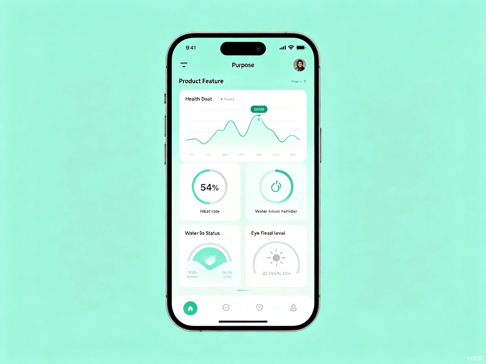

专为程序员打造的日常身体状况监测与健康建议系统。实时追踪久坐、用眼、饮水、姿势等关键指标，用数据守护每一位开发者的身心健康。
高强度脑力劳动与久坐不动的职业特性，让程序员群体面临独特的健康挑战
平均每天久坐超过10小时，腰椎、颈椎承受巨大压力，静脉曲张与代谢问题高发。
长时间盯着屏幕导致干眼症、视力下降，蓝光伤害累积，眼部疲劳成为常态。
项目deadline、线上故障带来持续心理压力，焦虑与睡眠问题普遍存在。
专注编码时经常忘记喝水，日均饮水量远低于推荐值，影响代谢与肾功能。
驼背、探头、手腕悬空等不良坐姿引发颈椎病、鼠标手等职业病。
加班、on-call导致作息不规律，运动时间被严重挤压，体能持续下降。
通过桌面端插件 + 移动端小程序的组合，实时采集工作数据，智能分析健康风险，并在关键时刻给出温馨提醒与科学建议。
无需额外硬件，利用现有设备即可实现：用眼时长追踪、久坐提醒、饮水记录、姿势检测（配合摄像头）、心率估算等功能。
所有数据汇聚成个人健康档案，支持周/月维度趋势分析，让健康改善看得见。

从数据监测到行为干预，全链路守护程序员健康
自动追踪屏幕使用时长、键盘鼠标活动、坐姿状态、饮水记录，构建完整健康画像。
基于用户行为模式与健康基线，AI 识别异常状态并预测健康风险，提供个性化干预策略。
智能判断工作节奏，在合适的时机推送休息、饮水、眼保健操等提醒，不打断心流状态。
根据实时数据生成定制化健康方案，包含办公室微运动、护眼技巧、坐姿矫正等 actionable 建议。
用可视化呈现程序员的典型健康数据与改善趋势
基于实时监测数据，系统自动生成的个性化建议
建议调整显示器高度至视线水平，颈部向后微收，双肩下沉放松。可尝试「下巴后缩」练习：用手指轻推下巴向后，保持5秒，重复10次。
遵循20-20-20法则：每20分钟看向20英尺（约6米）外物体20秒。同时建议眨眼频率提升至每分钟15次以上，缓解干眼症状。
建议立即补充200ml温水。可在桌面放置500ml水杯，设定每小时饮用1/4的目标，既能补水又能强制起身活动。
推荐「办公室3分钟微运动」：站立伸展双臂上举30秒、原地踏步60秒、颈部左右侧屈各30秒、手腕环绕20次。
建议进行3次深呼吸（吸气4秒、屏息4秒、呼气6秒），或闭目养神5分钟。可配合白噪音或轻音乐帮助神经系统恢复。
覆盖程序员全职业生涯与多元工作场景
日常办公室/远程工作场景，需要长期面对电脑，关注颈椎、用眼与久坐问题。
长时间编程学习、赶项目ddl，容易忽视健康，需要养成良好工作习惯。
会议与编码交替进行，作息不规律，需要高效碎片化的健康管理方案。
从效率提升到社会责任，创造多维价值
科学休息能提升注意力与代码质量。研究表明，合理工间休息可使开发效率提升20%以上，减少bug率。
企业员工健康管理市场超千亿规模。订阅制SaaS + 企业版健康管理方案，具备清晰盈利路径。
改善程序员群体普遍亚健康状态，降低职业病发病率，让技术人才有更长久、更健康的职业生涯。
跨端覆盖，隐私优先，开箱即用
桌面端插件（Electron）采集数据 → 本地AI推理（TensorFlow Lite）→ 小程序查看报告与建议
所有敏感数据本地存储，不上传云端，充分保护用户隐私。